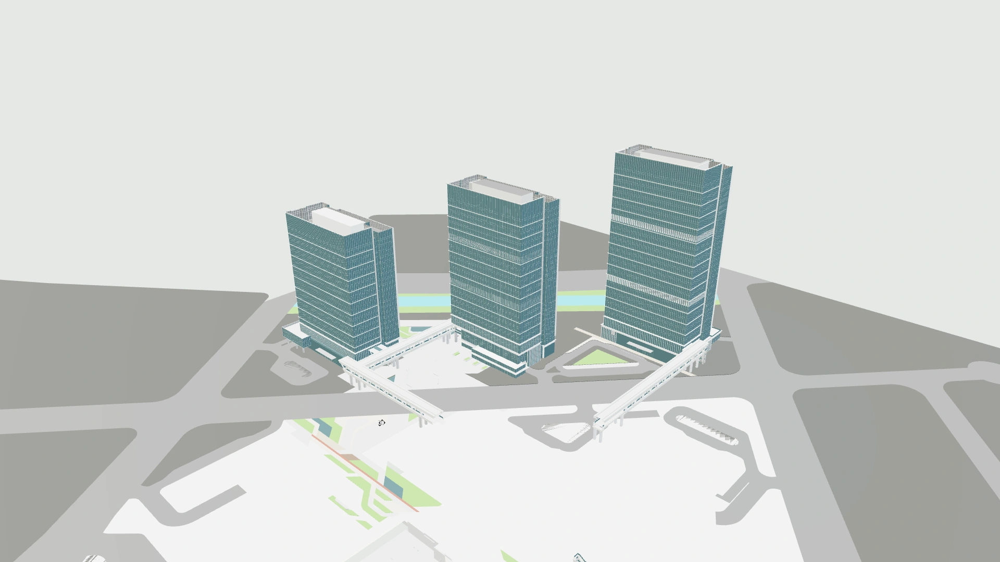
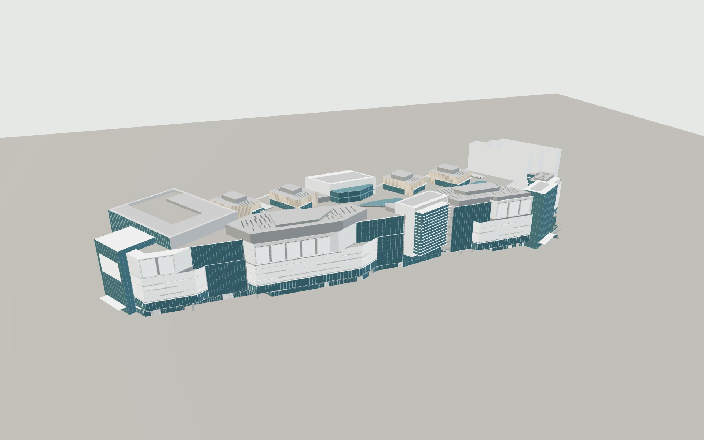

把自己，带进世界
从网页入口或二维码领取分身，选择公开资料。当前使用两套共享风格化形象，提供待机、行走与挥手动作，并非真实人脸复刻。
A GARDEN FOR EVERY ENCOUNTER
在熟悉的建筑前，留一处可以停下来的空间。风格化分身、曲木座椅与植物，把活动地图变成可以共同探索的会客花园。
按源文件版本展示；AB 的具体地块边界待场地方确认。

01 / AB SOURCE三栋塔楼20231226_T1-3塔楼调整.skp打开真实 3D ↗ 02 / AB SOURCET6 雨棚版本0801-T6雨棚模型-2017版本.skp打开真实 3D ↗
02 / AB SOURCET6 雨棚版本0801-T6雨棚模型-2017版本.skp打开真实 3D ↗

03 / C SOURCE商业裙房0831 Podium.3dm打开真实 3D ↗左侧选择「源模型 / 活动布置」，底部切换外景、入口、会客花园和俯瞰。建筑保留原场地形态与尺度；活动布置加入生成角色、家具、植物与点位。原始图片贴图未完整恢复。
从网页入口或二维码领取分身，选择公开资料。当前使用两套共享风格化形象，提供待机、行走与挥手动作，并非真实人脸复刻。
从清楚的推荐理由开始认识；发出邀请，等待对方确认，一起点亮园区里的连接。
按身份颜色进入活动，用网页演示点位打卡，实体 NFC 待现场联调，累计可核对的互动积分。
塔楼、T6 雨棚版本与 C 裙房实际切换；源模型与活动布置随时对照。也支持适配自建 GLB 与 Marble 导出场景。
体验、方案与使用指南，集中在这里。
下方视频记录了此前的真实建筑导入版本，使用旧人物与旧布置，不代表当前会客花园的视觉效果。最新体验请进入上方互动链接。
历史建筑导入实录 · 60 秒 · 更早的程序化白庭与艺廊 · 97 秒 · 历史建筑版本说明 PDF · 历史图文说明